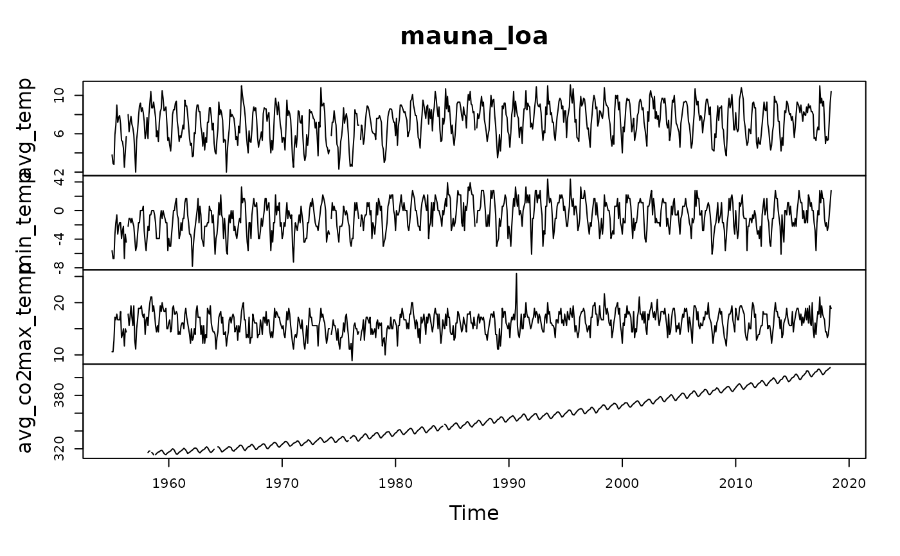

Monthly averages of temperatures and CO2 concentrations, maximal and minimal monthly temperatures at Mauna Loa slope observatory from 1955 to 2018.
mauna_loa
Format
An object of class mts (inherits from ts, matrix) with 768 rows and 4 columns.
Details
Atmospheric CO2 concentration is mole fraction in dry air, micromol/mol, abbreviated as ppm. Temperatures are in degree Celsius.
Examples
class(mauna_loa)#> [1] "mts" "ts" "matrix"head(mauna_loa)#> avg_temp min_temp max_temp avg_co2 #> [1,] 3.8 -5.6 10.6 NA #> [2,] 2.9 -6.7 10.6 NA #> [3,] 2.8 -6.7 12.8 NA #> [4,] 5.9 -3.3 17.2 NA #> [5,] 6.9 -1.7 16.7 NA #> [6,] 9.0 -0.6 17.8 NAplot(mauna_loa)# Using read(), the dataset becomes an annotated dataframe (ml_en <- read("mauna_loa", package = "data.io"))#> # A tibble: 768 x 5 #> time avg_temp min_temp max_temp avg_co2 #> <mth> <dbl> <dbl> <dbl> <dbl> #> 1 1955 Jan 3.8 -5.6 10.6 NA #> 2 1955 Feb 2.9 -6.7 10.6 NA #> 3 1955 Mar 2.8 -6.7 12.8 NA #> 4 1955 Apr 5.9 -3.3 17.2 NA #> 5 1955 May 6.9 -1.7 16.7 NA #> 6 1955 Jun 9 -0.6 17.8 NA #> 7 1955 Jul 7.2 -3.3 16.7 NA #> 8 1955 Aug 7.7 -2.2 16.7 NA #> 9 1955 Sep 7.9 -1.7 16.7 NA #> 10 1955 Oct 7 -1.7 18.3 NA #> # … with 758 more rowsclass(ml_en)#> [1] "dataframe" "tbl_df" "tbl" "data.frame"# Indicating lang = "EN_US" (all uppercase!) also converts temperatures # into degrees Farenheit (ml_en_us <- read("mauna_loa", package = "data.io", lang = "EN_US"))#> # A tibble: 768 x 5 #> time avg_temp min_temp max_temp avg_co2 #> <mth> <dbl> <dbl> <dbl> <dbl> #> 1 1955 Jan 38.8 21.9 51.1 NA #> 2 1955 Feb 37.2 19.9 51.1 NA #> 3 1955 Mar 37 19.9 55 NA #> 4 1955 Apr 42.6 26.1 63 NA #> 5 1955 May 44.4 28.9 62.1 NA #> 6 1955 Jun 48.2 30.9 64 NA #> 7 1955 Jul 45 26.1 62.1 NA #> 8 1955 Aug 45.9 28 62.1 NA #> 9 1955 Sep 46.2 28.9 62.1 NA #> 10 1955 Oct 44.6 28.9 64.9 NA #> # … with 758 more rows# Each variable is also labelled: ml_en$avg_co2#> [1] NA NA NA NA NA NA NA NA NA NA NA NA #> [13] NA NA NA NA NA NA NA NA NA NA NA NA #> [25] NA NA NA NA NA NA NA NA NA NA NA NA #> [37] NA NA 315.7 317.4 317.5 NA 315.9 314.9 313.2 NA 313.3 314.7 #> [49] 315.6 316.4 316.7 317.7 318.3 318.1 316.5 314.8 313.8 313.3 314.8 315.6 #> [61] 316.4 317.0 317.6 319.0 320.0 319.6 318.2 315.9 314.2 313.8 315.0 316.2 #> [73] 316.9 317.7 318.5 319.5 320.6 319.8 318.6 316.8 314.8 315.4 316.1 317.0 #> [85] 317.9 318.6 319.7 320.6 321.0 320.6 319.6 317.4 316.3 315.4 316.7 317.7 #> [97] 318.7 319.1 319.9 321.4 322.2 321.5 319.7 317.8 316.2 316.0 317.1 318.3 #> [109] 319.6 NA NA NA 322.2 321.9 320.4 318.7 316.7 316.8 317.8 318.7 #> [121] 319.4 320.4 320.9 322.1 322.2 321.9 321.4 318.8 317.8 317.3 318.9 319.4 #> [133] 320.6 321.6 322.4 323.9 324.0 323.8 322.4 320.4 318.6 318.1 319.8 321.1 #> [145] 322.1 322.5 323.0 324.4 325.0 324.1 322.6 320.9 319.3 319.3 320.7 322.0 #> [157] 322.6 323.1 323.9 325.0 325.6 325.4 324.1 322.0 320.4 320.2 321.3 322.8 #> [169] 324.0 324.4 325.6 326.7 327.3 326.8 325.9 323.7 322.4 321.8 322.9 324.1 #> [181] 325.0 326.0 326.9 328.1 328.1 327.7 326.4 324.7 323.1 323.2 324.0 325.1 #> [193] 326.2 326.7 327.2 327.8 328.9 328.6 327.3 325.5 323.4 323.6 324.8 326.0 #> [205] 326.8 327.6 327.8 329.7 330.1 329.1 328.1 326.3 324.9 325.1 326.5 327.6 #> [217] 328.5 329.6 330.3 331.5 332.5 332.1 330.9 329.3 327.5 327.2 328.2 328.6 #> [229] 329.4 330.7 331.5 332.6 333.2 332.2 331.1 329.1 327.3 327.3 328.3 329.6 #> [241] 330.7 331.5 331.9 333.2 333.9 333.4 332.0 329.9 328.5 328.3 329.4 NA #> [253] 331.6 332.8 333.5 334.6 334.8 334.0 333.1 330.7 328.9 328.8 330.1 331.6 #> [265] 332.7 333.1 334.9 336.1 336.9 336.2 334.9 332.6 331.3 331.3 332.4 333.6 #> [277] 334.9 335.2 336.7 337.7 338.0 338.0 336.4 334.4 332.4 332.4 333.8 334.9 #> [289] 336.1 336.7 338.3 338.9 339.2 339.3 337.5 335.8 334.0 334.2 335.3 336.8 #> [301] 337.9 338.3 340.0 340.9 341.5 341.3 339.4 337.7 336.2 336.1 337.3 338.3 #> [313] 339.3 340.6 341.6 342.5 343.0 342.5 340.8 338.4 336.9 337.1 338.6 339.9 #> [325] 341.0 341.7 342.8 344.0 344.6 343.8 342.3 340.1 338.3 338.3 339.6 340.9 #> [337] 341.7 342.9 343.3 345.2 346.0 345.6 344.2 342.3 340.4 340.4 341.6 343.1 #> [349] 344.1 344.8 345.5 NA 347.6 347.0 345.5 343.6 341.4 341.7 343.1 344.7 #> [361] 345.2 346.2 347.7 348.3 349.1 348.4 346.7 345.0 343.3 343.1 344.5 345.9 #> [373] 346.6 347.3 348.0 349.8 350.4 349.9 348.2 346.1 345.2 344.5 345.9 347.2 #> [385] 348.5 348.7 349.7 351.3 352.1 351.5 350.1 348.1 346.5 346.6 348.0 349.2 #> [397] 350.4 351.6 352.4 353.7 354.2 353.7 352.7 350.4 348.9 349.1 350.2 351.4 #> [409] 352.9 353.3 354.0 355.6 355.9 355.4 354.0 351.8 350.1 350.2 351.5 352.9 #> [421] 353.8 355.0 355.7 356.3 357.3 356.3 354.8 353.0 351.3 351.6 353.1 354.3 #> [433] 354.8 355.7 357.2 358.7 359.1 358.1 356.2 353.9 352.2 352.4 353.8 355.1 #> [445] 356.2 357.1 357.9 359.1 359.6 359.3 357.0 354.9 353.0 353.3 354.3 355.6 #> [457] 357.0 357.3 358.5 359.3 360.2 359.5 357.3 355.6 354.0 354.1 355.4 356.9 #> [469] 358.2 358.9 360.0 361.2 361.6 360.8 359.4 357.5 355.7 356.1 357.5 359.0 #> [481] 359.9 360.9 361.8 363.3 363.7 363.2 361.6 359.1 358.2 358.0 359.4 360.7 #> [493] 362.1 363.2 364.2 364.6 365.1 364.9 363.6 361.4 359.5 359.6 360.9 362.2 #> [505] 363.1 364.0 364.5 366.4 366.6 365.6 364.3 362.2 360.3 360.8 362.5 364.4 #> [517] 365.3 366.0 367.2 368.7 369.4 369.0 367.8 365.9 364.0 364.4 365.5 367.1 #> [529] 368.2 369.1 369.7 371.0 371.0 370.3 369.4 366.9 364.8 365.4 366.7 368.1 #> [541] 369.3 369.5 370.6 371.8 371.6 371.7 369.9 368.1 367.0 367.0 368.4 369.7 #> [553] 370.6 371.5 372.4 373.4 373.9 373.2 371.5 369.6 368.2 368.4 369.8 371.2 #> [565] 372.5 373.2 374.1 375.0 375.8 375.5 374.0 371.9 370.8 370.6 372.2 373.8 #> [577] 374.9 375.6 376.4 377.7 378.6 378.3 376.7 374.4 373.2 373.1 374.7 376.0 #> [589] 377.0 377.9 378.9 380.4 380.6 379.7 377.5 376.0 374.2 374.5 376.2 377.5 #> [601] 378.5 379.7 380.8 382.3 382.4 382.2 380.7 378.7 376.7 377.0 378.4 380.1 #> [613] 381.4 382.2 382.7 384.6 385.0 384.1 382.5 380.4 378.9 379.1 380.1 381.8 #> [625] 382.9 383.9 384.6 386.5 386.6 386.1 384.5 382.0 381.0 381.1 382.4 383.9 #> [637] 385.5 385.8 386.0 387.2 388.5 387.8 386.4 384.1 383.2 383.0 384.2 385.6 #> [649] 386.9 387.5 388.8 389.6 390.1 389.5 388.0 386.1 384.7 384.4 386.0 387.4 #> [661] 388.7 390.2 391.2 392.5 393.0 392.1 390.2 388.4 386.9 387.2 388.7 389.8 #> [673] 391.3 391.9 392.6 393.2 394.2 393.7 392.5 390.1 389.1 389.0 390.3 391.9 #> [685] 393.1 393.9 394.4 396.2 396.7 395.7 394.4 392.4 391.1 391.1 393.0 394.3 #> [697] 395.6 396.8 397.4 398.4 399.8 398.6 397.3 395.2 393.4 393.7 395.2 396.8 #> [709] 397.9 398.0 399.8 401.4 401.8 401.2 399.1 397.0 395.4 396.0 397.3 398.9 #> [721] 400.0 400.3 401.5 403.3 404.0 402.8 401.3 398.9 397.6 398.3 400.2 401.9 #> [733] 402.5 404.0 404.8 407.4 407.7 406.8 404.4 402.2 401.0 401.6 403.5 404.4 #> [745] 406.1 406.4 407.2 409.0 409.6 408.8 407.1 405.1 403.4 403.6 405.1 406.8 #> [757] 408.0 408.4 409.5 410.3 411.2 NA NA NA NA NA NA NA #> attr(,"label") #> [1] "Monthly [atmospheric CO2]" #> attr(,"units") #> [1] "ppm"#> # A tibble: 768 x 5 #> time avg_temp min_temp max_temp avg_co2 #> <mth> <dbl> <dbl> <dbl> <dbl> #> 1 1955 Jan 3.8 -5.6 10.6 NA #> 2 1955 Feb 2.9 -6.7 10.6 NA #> 3 1955 Mar 2.8 -6.7 12.8 NA #> 4 1955 Apr 5.9 -3.3 17.2 NA #> 5 1955 May 6.9 -1.7 16.7 NA #> 6 1955 Jun 9 -0.6 17.8 NA #> 7 1955 Jul 7.2 -3.3 16.7 NA #> 8 1955 Aug 7.7 -2.2 16.7 NA #> 9 1955 Sep 7.9 -1.7 16.7 NA #> 10 1955 Oct 7 -1.7 18.3 NA #> # … with 758 more rowsml_fr$avg_co2#> [1] NA NA NA NA NA NA NA NA NA NA NA NA #> [13] NA NA NA NA NA NA NA NA NA NA NA NA #> [25] NA NA NA NA NA NA NA NA NA NA NA NA #> [37] NA NA 315.7 317.4 317.5 NA 315.9 314.9 313.2 NA 313.3 314.7 #> [49] 315.6 316.4 316.7 317.7 318.3 318.1 316.5 314.8 313.8 313.3 314.8 315.6 #> [61] 316.4 317.0 317.6 319.0 320.0 319.6 318.2 315.9 314.2 313.8 315.0 316.2 #> [73] 316.9 317.7 318.5 319.5 320.6 319.8 318.6 316.8 314.8 315.4 316.1 317.0 #> [85] 317.9 318.6 319.7 320.6 321.0 320.6 319.6 317.4 316.3 315.4 316.7 317.7 #> [97] 318.7 319.1 319.9 321.4 322.2 321.5 319.7 317.8 316.2 316.0 317.1 318.3 #> [109] 319.6 NA NA NA 322.2 321.9 320.4 318.7 316.7 316.8 317.8 318.7 #> [121] 319.4 320.4 320.9 322.1 322.2 321.9 321.4 318.8 317.8 317.3 318.9 319.4 #> [133] 320.6 321.6 322.4 323.9 324.0 323.8 322.4 320.4 318.6 318.1 319.8 321.1 #> [145] 322.1 322.5 323.0 324.4 325.0 324.1 322.6 320.9 319.3 319.3 320.7 322.0 #> [157] 322.6 323.1 323.9 325.0 325.6 325.4 324.1 322.0 320.4 320.2 321.3 322.8 #> [169] 324.0 324.4 325.6 326.7 327.3 326.8 325.9 323.7 322.4 321.8 322.9 324.1 #> [181] 325.0 326.0 326.9 328.1 328.1 327.7 326.4 324.7 323.1 323.2 324.0 325.1 #> [193] 326.2 326.7 327.2 327.8 328.9 328.6 327.3 325.5 323.4 323.6 324.8 326.0 #> [205] 326.8 327.6 327.8 329.7 330.1 329.1 328.1 326.3 324.9 325.1 326.5 327.6 #> [217] 328.5 329.6 330.3 331.5 332.5 332.1 330.9 329.3 327.5 327.2 328.2 328.6 #> [229] 329.4 330.7 331.5 332.6 333.2 332.2 331.1 329.1 327.3 327.3 328.3 329.6 #> [241] 330.7 331.5 331.9 333.2 333.9 333.4 332.0 329.9 328.5 328.3 329.4 NA #> [253] 331.6 332.8 333.5 334.6 334.8 334.0 333.1 330.7 328.9 328.8 330.1 331.6 #> [265] 332.7 333.1 334.9 336.1 336.9 336.2 334.9 332.6 331.3 331.3 332.4 333.6 #> [277] 334.9 335.2 336.7 337.7 338.0 338.0 336.4 334.4 332.4 332.4 333.8 334.9 #> [289] 336.1 336.7 338.3 338.9 339.2 339.3 337.5 335.8 334.0 334.2 335.3 336.8 #> [301] 337.9 338.3 340.0 340.9 341.5 341.3 339.4 337.7 336.2 336.1 337.3 338.3 #> [313] 339.3 340.6 341.6 342.5 343.0 342.5 340.8 338.4 336.9 337.1 338.6 339.9 #> [325] 341.0 341.7 342.8 344.0 344.6 343.8 342.3 340.1 338.3 338.3 339.6 340.9 #> [337] 341.7 342.9 343.3 345.2 346.0 345.6 344.2 342.3 340.4 340.4 341.6 343.1 #> [349] 344.1 344.8 345.5 NA 347.6 347.0 345.5 343.6 341.4 341.7 343.1 344.7 #> [361] 345.2 346.2 347.7 348.3 349.1 348.4 346.7 345.0 343.3 343.1 344.5 345.9 #> [373] 346.6 347.3 348.0 349.8 350.4 349.9 348.2 346.1 345.2 344.5 345.9 347.2 #> [385] 348.5 348.7 349.7 351.3 352.1 351.5 350.1 348.1 346.5 346.6 348.0 349.2 #> [397] 350.4 351.6 352.4 353.7 354.2 353.7 352.7 350.4 348.9 349.1 350.2 351.4 #> [409] 352.9 353.3 354.0 355.6 355.9 355.4 354.0 351.8 350.1 350.2 351.5 352.9 #> [421] 353.8 355.0 355.7 356.3 357.3 356.3 354.8 353.0 351.3 351.6 353.1 354.3 #> [433] 354.8 355.7 357.2 358.7 359.1 358.1 356.2 353.9 352.2 352.4 353.8 355.1 #> [445] 356.2 357.1 357.9 359.1 359.6 359.3 357.0 354.9 353.0 353.3 354.3 355.6 #> [457] 357.0 357.3 358.5 359.3 360.2 359.5 357.3 355.6 354.0 354.1 355.4 356.9 #> [469] 358.2 358.9 360.0 361.2 361.6 360.8 359.4 357.5 355.7 356.1 357.5 359.0 #> [481] 359.9 360.9 361.8 363.3 363.7 363.2 361.6 359.1 358.2 358.0 359.4 360.7 #> [493] 362.1 363.2 364.2 364.6 365.1 364.9 363.6 361.4 359.5 359.6 360.9 362.2 #> [505] 363.1 364.0 364.5 366.4 366.6 365.6 364.3 362.2 360.3 360.8 362.5 364.4 #> [517] 365.3 366.0 367.2 368.7 369.4 369.0 367.8 365.9 364.0 364.4 365.5 367.1 #> [529] 368.2 369.1 369.7 371.0 371.0 370.3 369.4 366.9 364.8 365.4 366.7 368.1 #> [541] 369.3 369.5 370.6 371.8 371.6 371.7 369.9 368.1 367.0 367.0 368.4 369.7 #> [553] 370.6 371.5 372.4 373.4 373.9 373.2 371.5 369.6 368.2 368.4 369.8 371.2 #> [565] 372.5 373.2 374.1 375.0 375.8 375.5 374.0 371.9 370.8 370.6 372.2 373.8 #> [577] 374.9 375.6 376.4 377.7 378.6 378.3 376.7 374.4 373.2 373.1 374.7 376.0 #> [589] 377.0 377.9 378.9 380.4 380.6 379.7 377.5 376.0 374.2 374.5 376.2 377.5 #> [601] 378.5 379.7 380.8 382.3 382.4 382.2 380.7 378.7 376.7 377.0 378.4 380.1 #> [613] 381.4 382.2 382.7 384.6 385.0 384.1 382.5 380.4 378.9 379.1 380.1 381.8 #> [625] 382.9 383.9 384.6 386.5 386.6 386.1 384.5 382.0 381.0 381.1 382.4 383.9 #> [637] 385.5 385.8 386.0 387.2 388.5 387.8 386.4 384.1 383.2 383.0 384.2 385.6 #> [649] 386.9 387.5 388.8 389.6 390.1 389.5 388.0 386.1 384.7 384.4 386.0 387.4 #> [661] 388.7 390.2 391.2 392.5 393.0 392.1 390.2 388.4 386.9 387.2 388.7 389.8 #> [673] 391.3 391.9 392.6 393.2 394.2 393.7 392.5 390.1 389.1 389.0 390.3 391.9 #> [685] 393.1 393.9 394.4 396.2 396.7 395.7 394.4 392.4 391.1 391.1 393.0 394.3 #> [697] 395.6 396.8 397.4 398.4 399.8 398.6 397.3 395.2 393.4 393.7 395.2 396.8 #> [709] 397.9 398.0 399.8 401.4 401.8 401.2 399.1 397.0 395.4 396.0 397.3 398.9 #> [721] 400.0 400.3 401.5 403.3 404.0 402.8 401.3 398.9 397.6 398.3 400.2 401.9 #> [733] 402.5 404.0 404.8 407.4 407.7 406.8 404.4 402.2 401.0 401.6 403.5 404.4 #> [745] 406.1 406.4 407.2 409.0 409.6 408.8 407.1 405.1 403.4 403.6 405.1 406.8 #> [757] 408.0 408.4 409.5 410.3 411.2 NA NA NA NA NA NA NA #> attr(,"label") #> [1] "[CO2 atmosphérique]" #> attr(,"units") #> [1] "ppm"